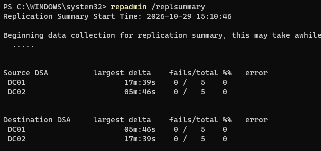
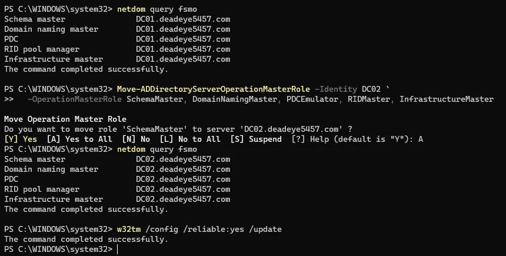
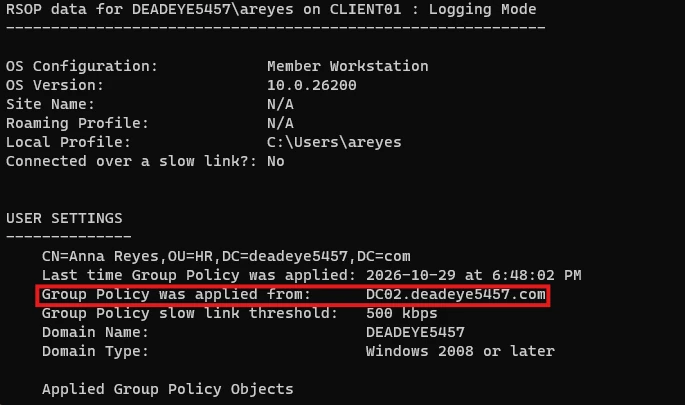
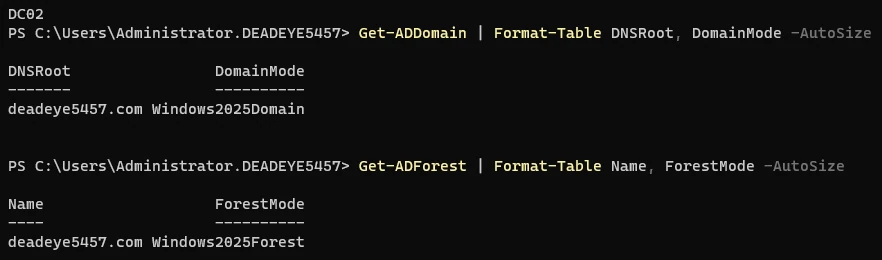

Active Directory lab
A scripted build, then a Server 2016 to 2025 migration
I built an Active Directory domain from PowerShell scripts on Windows Server 2016, then migrated it side by side to Server 2025. After each stage I ran a check and only carried on once it passed.
Everything I claim in the repo links to a screenshot or a PowerShell transcript.
- Build
- PowerShell, rebuilt from the repo
- Migrate
- Side by side, all five FSMO roles
- Verify
- repadmin · dcdiag · scream test
- Schema
- 87 to 91, forest at Windows2025
- Log
- 11 problems, each with root cause and proof
- Host
- 3 VMs on a 16 GB laptop, VMware Workstation
Why I did it this way
A side-by-side migration
An in-place upgrade would have been quicker. I went side by side so the old domain controller stayed up as a fallback until the new one had passed the replication checks, the role transfer and the scream test.
Snapshots of both servers together
Once two domain controllers are replicating, reverting just one of them to an older snapshot causes a USN rollback, which silently breaks replication. So from the point DC02 was promoted, I shut both down and snapshotted them as a pair.
How I know it worked
The migration had twelve steps. These are four of them, with the screenshot for each.
Step 4 of 12
Replication was healthy in both directions
Before moving any roles I ran repadmin. Both domain controllers showed 0 failures out of 5, as a source and as a destination.
PS> repadmin /replsummary

Step 8 of 12
All five FSMO roles moved to DC02
I checked who held the roles, moved all five with one command, then checked again.
PS> netdom query fsmo

Step 9 of 12
Scream test with DC01 switched off
With the old domain controller powered off, a domain user could still log on at the client, and Group Policy came from DC02.
PS> gpresult /r

Step 11 of 12
Domain and forest raised to Windows2025
This one can't be undone, so I left it until DC01 was demoted and DC02 had already come through a crash.
PS> Get-ADDomain | Format-Table DNSRoot, DomainMode

What went wrong
Three of the eleven problems I hit.
-
DC02 blue-screened partway through
- What I saw
dcdiagshowed DC02 had rebooted after bugcheck0x7A. Its second parameter,0xc0000185, is an I/O device error, so I looked at the host's storage first.- Cause
- The VMs are on an external SSD over USB. The drive dropped out for a moment and DC02's virtual disk disappeared mid-read.
- Fix
- I turned off USB power management for that port and plugged the SSD in directly. Before carrying on I checked the Directory Service log for database corruption events and found none.
-
dcdiag failed almost everything after the promotion
- What I saw
- DFSREvent, KccEvent, Services, SystemLog and ObjectsReplicated all failed on both domain controllers.
- Cause
- Most of it was noise from running in a VM. Two failures were real: replication hadn't caught up yet, and DC01's firewall was blocking remote event log reads.
- Fix
- I went through the failures one at a time and fixed the two real ones. Then I confirmed with
repadmin, the SYSVOL share and event 4604 before touching the roles.
-
Demoting DC01 left stale DNS behind
- What I saw
- After the demotion, the
_msdcsdelegation still listed DC01 as its only name server. - Cause
- That delegation was created with the forest on DC01, and promoting DC02 never updated it.
- Fix
- I added a delegation to DC02, removed DC01's record, and checked that no NS or SRV records still pointed at the old server.
What I learned
PowerShell can do almost everything I used to click through, and it leaves a transcript behind as proof.
I also learned to check before any step I can't undo. I didn't move the roles until replication was proven, didn't demote DC01 until the scream test passed, and didn't raise the functional level until DC02 had come through a crash.
Going side by side caught a mistake of my own too. I built a Task Manager GPO by hand without noticing the script had already made one, so the HR OU had two GPOs doing the same job until a link check caught it.
Tools: Active Directory Domain Services, DNS, Group Policy, repadmin, dcdiag, Windows Server Backup, PowerShell, VMware Workstation.